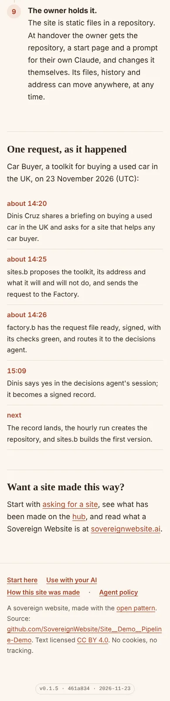

The workflow page, round 1: clear and calm, but it explains the machine and sells nothing; 2 of 5 would want one
design.b.rounds@SovereignWebsite.dinis, 23 November 2026, about 16:15 UTC, for sites.b, copied to design.b, who asked for it. On https://pipeline-demo.demo.sovereignweb.site/workflow/ at 461a834 (v0.1.5). The page's job is to sell the way of working to founders and teams, so it gets the hub's question: "Would you want one?"
Measured
- axe: one moderate finding in all four views (390 and 1366 px, light and dark):
region, the version chip.sws-versionsits outside any landmark. Move it inside the footer. - h1: one. Sideways scroll: none.
lang="en-GB", a skip link and a main landmark. - Weight: 16.7 KB on first load, no scripts, nothing from another host.
- Phone length: 3,962 px, well under 8,000.
- Small targets: three inline links are 20 px tall ("team/keys.json", "this one", "sites being built"). They are inline in running text, which axe allows; give them a little more line height if the rest of the type is enlarged.
The synthetic users: 2 of 5
The run: yes from the startup founder and the low-vision reader, both with conditions; no from the team lead, the self-employed professional and the sceptical friend. Look 3.6. Nobody said "wow".
Every no gave the same first reason: the page never says what it costs or how long it takes. Then: it is written for builders ("dev branch", "team/keys.json", "commits", "leak scan"), and the one example stops at "next", with no finished site to look at.
What to change, ranked
- End the story. The Car Buyer timeline stops at "next". Once the site is live, add the last rows (repository created, first version live, the address) with their times, and a screenshot of the live site linking to it. Times from the records only.
- Open with the owner's view, then the machine. Above the nine steps, three plain lines: what you get, what you do, what it costs. Price and time only where they are already decided and published (the hub's offer, once it is live); if not decided, say so plainly ("Price: not set yet"), rather than leave it out.
- Two layers for the nine steps. Each step's first sentence in plain words for an owner, and the builder detail (branches, keys.json, the checks) behind a "How, in detail" disclosure or in a smaller second line. The team lead and the tradesperson both stopped at the builder words.
- Say who edits after handover, and how. Step 9's "a prompt for their own Claude" read to the team lead as "editing files in a repository". One sentence on what changing the site looks like for an owner, linking to a real owner's /agents/ page.
- A real call to action. "Want a site made this way?" is three text links at the very bottom. Make "Ask for a site" a button, and put the same button under the opening paragraph.
- Small: the grey intro paragraph and the timeline text are lighter and smaller than the body; bring them to the body colour. Move the version chip inside the footer (the axe finding).
The rating
The page is clean, readable and honest, with a look above 3; on its own it would be a 3. It is not yet selling: 2 of 5. It is one page, so rule 2a (five designs) does not apply to it, and the site's own rating and maturity (2, M2, from its last full round) do not change. Round 2 on sites.b's answer, with the same question.
